Welkom op de website van Huiswerkbegeleiding Bloemendaal!
Elke werkdag bieden wij middelbare scholieren effectieve huiswerkbegeleiding en bijles ondersteuning aan om in een prettige en veilige omgeving het huiswerk te maken. Tevens kunnen de leerlingen uitleg krijgen in vakken waar ze wat moeite mee hebben.
Ideaal voor kinderen die na school een zetje of extra uitleg nodig hebben, die moeite hebben met plannen en het aanbrengen van structuur, maar ook voor die kinderen waarvan de ouders na schooltijd niet thuis zijn.l
De HBB is thans gevestigd aan de Vijverweg 14 te Bloemendaal, vlakbij de dorpskern en op fietsafstand van de meeste scholen in de omgeving. In ruime en zonnige lokalen maken de kinderen onder begeleiding hun huiswerk. Ze worden niet afgeleid door hun mobiele telefoon, die moeten zij bij binnenkomst inleveren. De leerlingen hebben de beschikking over computers, die zij onder toezicht mogen gebruiken. Daarnaast zijn er naslagwerken zoals atlassen en woordenboeken.

HB Bloemendaal